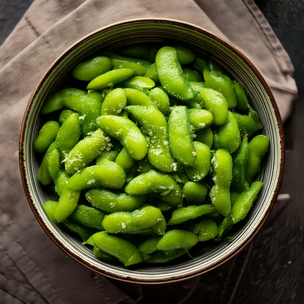

Steamed edamame lightly salted — high protein, high fiber, satisfying, and blood-sugar friendly.
Nutrition (per serving)
150
Calories
12g
Carbs
12g
Protein
6g
Fat
8g
Fiber
~18
Est. GI
Why this fits a diabetes-friendly diet
With only 12g of carbs per serving, it's a lighter-carb option without needing a strict low-carb framing, and its estimated glycemic index of ~18 means the carbs it does have tend to digest slowly rather than spiking blood sugar fast, and 12g of protein per serving also helps slow digestion and blunt any post-meal rise, and 8g of fiber per serving adds the same slowing effect.
Ingredients
- 1 cup edamame
Instructions
- Cook frozen edamame in boiling water 4–5 minutes.
- Drain and serve warm or chilled.
- Lightly season if desired.
In GlucoBeacon
This recipe is one of 150+ in the GlucoBeacon Recipe Library, each with full nutrition breakdown, glycemic index estimate, and one-tap logging straight to your blood sugar history. Get notified when GlucoBeacon launches →